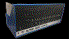
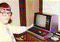

The goal: Help vintage terminal based computers explore the internet. To be able to view images and browse the internet and even use email.
Outline of workflow:
using Elinks browser: Elinks Text Browser
you are able to setup the browser to trigger external programs when encountering different file types
the elinks.conf file sets everything up for you
jpgtofabgl is the python script that translates the images into fabgl escape codes for the terminal

|
| Repository | PPMVIEW2 |
|---|---|
| ALTAIR.PPM | Image |
| CUBS.PPM | Image |
| GirlEar.ppm | Image |
| PPMLST.COM | Printer output utility. |
| PPMVIEW2.COM | Picture Display and output utility. |